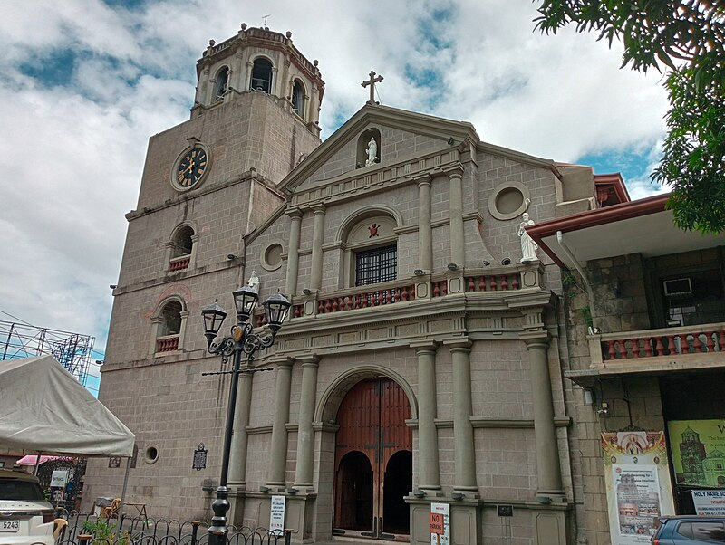

The term PASIGINAE comes from the Latin word Pasiginae,
which means Pasig. The Diocese of Pasig (Latin: Dioecesis Pasiginae) is one of the Dioceses of the Catholic Church in the Philippines that comprises the City of Pasig,
Taguig (with the exemptions of the EMBO barangays (formerly part of Makati City), which are under the ecclesiastical jurisdiction of the Archdiocese of Manila),
and the Municipality of Pateros in Metro Manila, Philippines. The Diocese of Pasig was established on June 28, 2003, by the late St. Pope John Paul II and the papal bull Dei Caritas (John Paul II, 2003).
It was formally and canonically erected on August 21, 2003, with the installation of Most. Rev. Francisco C. San Diego, D.D. as its first bishop.
The Immaculate Conception Cathedral-Parish, located in the central vicinity of Pasig, was made the cathedral or the seat of the diocese.
Today, Most. Rev. Mylo Hubert C. Vergara, D.D. is the current and second bishop of the diocese. The Diocese of Pasig comprises four vicariates: the Vicariate of St. Anne (Taguig and Pateros), the Vicariate of Immaculate Conception (Pasig), and the Vicariate of Sto. Niño (Taguig), and the Vicariate of Sto. Tomás de Villanueva (Pasig).
Prior to the establishment as a local church, the present-day Diocese of Pasig used to be a part of the
Archdiocese of Manila
(largely under the Ecclesiastical District of Makati).
The Vicariate of
Santo Tomas de Villanueva
was then under the
Diocese of Antipolo
.
The oldest parishes, built during the Spanish colonialization period, were in Pasig (Immaculate Conception), Pateros (San Roque), and Taguig (Saint Anne). In 1953, the community of Santolan, Pasig was granted a parish of their own, Santo Tomas de Villanueva Parish, which was followed by the establishment of new parishes in Rosario and Bicutan (1963),
Tipas and Bagong Ilog (1969), and Barrio Capitolyo (1976). The northeastern side of Pasig, which comprises the barangays of Manggahan, Santolan, De La Paz, Santa Lucia, and Rosario, was given to the newly established
Diocese of Antipolo
in 1983.
Between 1985 and 1995, six chapels of the Immaculate Conception Parish were elevated as independent parishes.
Parishes belonging to the Vicariate of the Immaculate Conception and to the municipalities of Taguig and Pateros were part of the Ecclesiastical District of Makati, which was then headed by Manila Auxiliary Bishop
Crisostomo Yalung
.
In October 2001, these parishes were carved out to form the new Ecclesiastical District of Pasig, with Nestor Cariño, then Secretary-General of the
Catholic Bishops' Conference of the Philippines
(now bishop-emeritus of
Legazpi
),
as its first district bishop. Between the years 2000 and 2003, in preparation for the erection of the new diocese, some juridical changes to the district took place.
Barangays San Antonio and Oranbo, which formerly belonged to Saint Francis of Assisi Parish in
Mandaluyong
, were turned over to Holy Family Parish.
The military chapel of Our Lady of the Assumption in Fort Bonifacio was turned over by the Military Ordinariate to the Archdiocese of Manila in 2000 and was renamed Saint Michael Chaplaincy.
Saint Joseph Chapel in Upper Bicutan, Taguig, which belonged to San Martin de Porres Parish in Parañaque City, became an independent parish under the District of Pasig in 2002.
On June 28, 2003, few months after carving out the dioceses of
Parañaque
and
Novaliches
from the Archdiocese of Manila, Pope John Paul II
decreed the erection of three more new dioceses in response to the surging pastoral needs of the faithful of the archdiocese. With the promulgation of the papal bull Dei Caritas,
the Pope officially established the new Diocese of Pasig and appointed
Francisco Capiral San Diego
, then bishop of
San Pablo, Laguna
, as its first bishop.
The Vicariate of Santo Tomas de Villanueva was separated from the Diocese of Antipolo to be included in the new diocese.
The diocese was canonically erected on August 21, 2003, with the installation of Bishop
San Diego
in the presence of the Apostolic Nuncio, Archbishop
Antonio Franco
, Manila Archbishop Cardinal
Jaime Sin
, and the bishops gracing the occasion.
Bishop San Diego named the district's episcopal vicar, Rodolfo Gallardo, as the first
vicar general
, Roy Rosales as the first
chancellor
, Pedro Enrique Rabonza IV as judicial vicar, Amando Litana as
superintendent
of Catholic schools, and Manuel Gabriel as the diocesan pastoral director.
In December 2003, Msgr. Gallardo was installed second
rector
of the Immaculate Conception Cathedral-Parish.
After he retired as vicar-general and cathedral rector in February 2005, he was succeeded by Bishop San Diego as acting parish priest and rector.
The bishop named Ramil Marcos, his private secretary and vice-chancellor, as the second
vicar general
of the diocese and Roy Rosales as the fourth rector of the cathedral.
In 2006, he appointed Orlando Cantillon as the new vicar general.
During his term, Bishop San Diego worked for the improvement of the Catholic cemetery and the construction of the bishop's residence and diocesan offices within the vicinity of the cathedral.
He started a retirement plan fund for the clergy and summoned a general pastoral assembly for lay leaders in the diocese.
Due to the shortage of parish priests, he entrusted a number of parishes to guest priests as priests-in-charge or administrators.
His term was marked by the papal canonical coronation of the image of
Our Lady of the Immaculate Conception of Pasig
in the cathedral on December 7, 2008, the solemn declaration of San Roque Parish in Pateros as the Diocesan Shrine of Santa Marta on February 7, 2009, and the establishment of Tanyag Chapel,
which belonged to Sagrada Familia Parish, as a quasi-parish (Our Mother of Perpetual Help Quasi-Parish) on September 8, 2010.
On December 21, 2010, Pope
Benedict XVI
accepted San Diego's retirement as bishop and named Manila Archbishop Cardinal
Gaudencio Rosales
as concurrent
apostolic administrator
of the diocese. On April 20, 2011, the Pope appointed Mylo Hubert Claudio Vergara, bishop of
San Jose, Nueva Ecija
, as the second bishop of Pasig.
During his term, Bishop Vergara strengthened the lay evangelization programs in the diocese, invited some religious orders to administer a number of parishes in the diocese,
and oversaw the inauguration of the Tahanan ng Mabuting Pastol (House of Good Shepherd) Building within the vicinity of Santa Clara de Montefalco Parish to house the new bishop's residence
and diocesan offices on April 24, 2017. On September 15, 2012, he established San Vicente Ferrer Quasi-Parish in Palar Village, Barangay
Pinagsama
, Taguig and later elevated Our Mother of Perpetual Help Quasi-Parish in Bagong Tanyag (2015),
St. Michael the Archangel Chaplaincy in Fort Bonifacio (2017), and St. Vincent Ferrer Quasi-Parish in Palar (2018) to full-fledged parochial status.
G na 20th Canonical Erection Anniversary of the Diocese of Pasig Cycle A Year I
Sambayanan ng Pasig: Magpugay at Magbunyi!
G na! Clergy Special | 19th Anniversary of the Diocese of Pasig
ABOUT THE DIOCESE

THE BISHOP
VICAR GENERAL
CLERGY
VICARIATES
2035 by Diocese of Pasig.